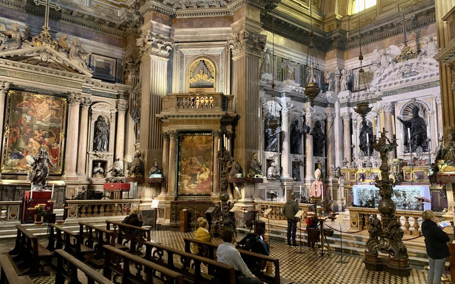
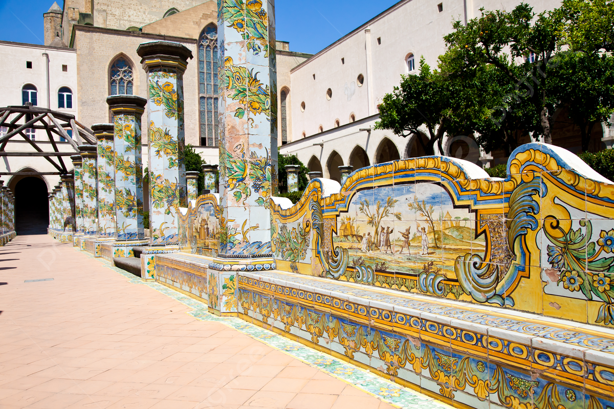
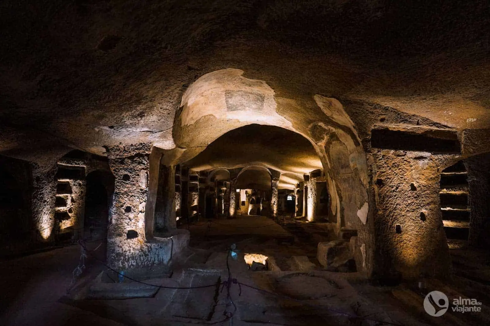
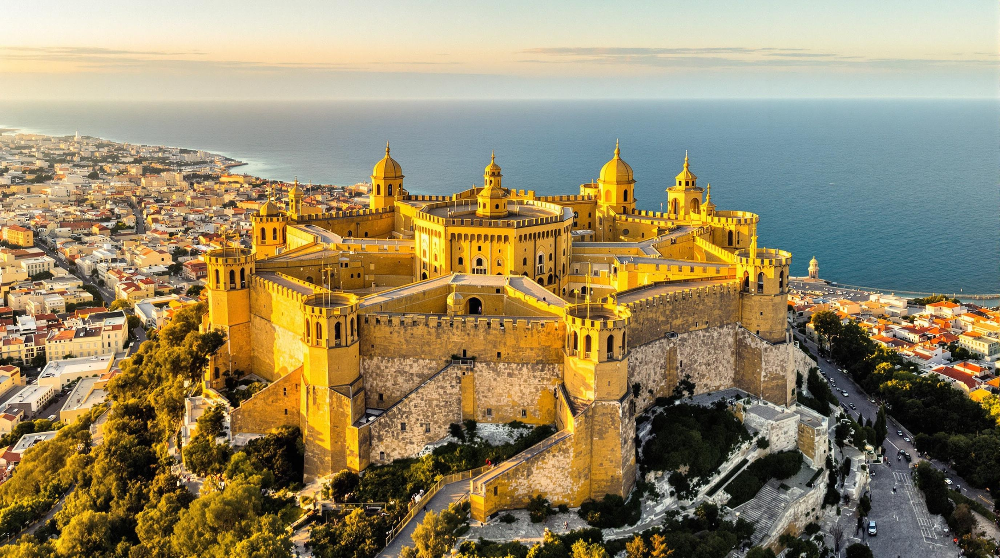

Pontos Turístcos de Nápoles
O Centro Histórico e a Spaccanapoli

O Centro Histórico de Nápoles é um verdadeiro museu ao ar livre, onde a história e a cultura se entrelaçam, e a Spaccanapoli é uma rua estreita e reta, é o coração pulsante da cidade, dividindo-a em duas partes e oferecendo um passeio por marcos históricos e maravilhas arquitetônicas, É um lugar onde a vida cotidiana se desenrola em um cenário de igrejas barrocas, palácios, oficinas de artesanato e trattorias que servem a autêntica culinária napolitana. A rua é um testemunho vivo de milênios de história, onde o sagrado e o profano se misturam harmoniosamente.
O Museu Arqueológico Nacional de Nápoles
O Museu Arqueológico Nacional de Nápoles (MANN) é um dos mais antigos e importantes do mundo do seu estilo, abrigando uma coleção incomparável de artefatos da antiguidade clássica. Fundado no século XVIII, o museu se estabeleceu como guardião de grande parte dos tesouros descobertos nas escavações das cidades romanas de Pompeia e Herculano, soterradas pela erupção do Vesúvio em 79 d.C. O MANN é mundialmente famoso pelo seu acervo de Pompeia e Herculano, incluindo mosaicos, frescos e objetos do cotidiano que ajudam a imaginar como era a realidade quotidiana romana. Entre os mosaicos, destaca-se uma peça que muitos consideram o ponto alto do museu: enorme, rica em detalhes, com cenas quase "cinematográficas". As pinturas murais e decorações mostram como os romanos construíam conscientemente o ambiente de suas casas: com cores, padrões, referências mitológicas e truques visuais. A coleção de esculturas, especialmente as de origem Farnese, traz o clássico "grande estilo" da antiguidade: heróis musculosos, deuses, imperadores, em tamanhos e qualidades que fazem qualquer pessoa parar por um momento. O MANN também conta com uma Sala Secreta, ou Gabinetto Segreto, que abriga artefatos e esculturas eróticas de Pompeia e Herculano, capturando a preocupação com atividades sensuais. O museu ocupa um lugar de destaque na paisagem cultural e histórica de Nápoles, exibindo uma série de artefatos da região da Campânia/Vesúvio e de outras regiões, incluindo os locais distantes do Egito e, mais perto de casa, até mesmo Roma. O MANN é um importante repositório do passado, que nos ajuda a reunir e desvendar os segredos das sociedades antigas.
o Duomo de Nápoles
O Duomo de Nápoles, também conhecido como Catedral de Santa Maria Assunta, é uma impressionante obra arquitetônica e um importante marco histórico na cidade de Nápoles, Itália. História e Importância O Duomo de Nápoles foi construído no século XIII sob a dinastia Anjou e é dedicado a Santa Maria Assunta. A catedral é um testemunho da rica história da cidade, tendo sido erguida sobre antigas basílicas paleocristãs do século IV, como a Basílica de Santa Restituta. Ao longo dos séculos, a catedral passou por várias reconstruções e modificações, refletindo estilos góticos, barrocos e neogóticos, com a fachada neogótica finalizada por Enrico Alvino em 1905. A catedral apresenta uma fachada imponente em estilo neogótico, adornada com estátuas de santos e uma majestosa rosácea central. O interior é ricamente decorado com afrescos, mosaicos e capelas elegantes, criando um ambiente de grande beleza e reverência. A Capela de San Gennaro, dedicada ao santo padroeiro de Nápoles, é uma das seções mais significativas da catedral, onde ocorre o famoso milagre da liquefação do sangue de São Januário, atraindo milhares de peregrinos todos os anos. Um dos eventos mais importantes associados ao Duomo é a festa de San Gennaro, que ocorre em setembro. Durante essa celebração, o sangue do santo, que é mantido em frascos, é retirado e, se liquefaz, é considerado um sinal de boa sorte para a cidade. Este evento é um momento de grande emoção e devoção para os habitantes locais e visitantes. A entrada na catedral é gratuita, mas para visitar a Capela do Tesouro de San Gennaro ou o museu anexo, é necessário adquirir um ingresso. O Duomo de Nápoles é um ponto turístico imperdível para quem visita a cidade, oferecendo uma rica experiência cultural e espiritual. Em resumo, o Duomo de Nápoles não é apenas um local de culto, mas também um símbolo da história e da cultura napolitana, refletindo a resiliência e a fé de seu povo ao longo dos séculos.
O San Gennaro

Link da imagem originalSan Gennaro de Nápoles San Gennaro, conhecido em português como São Januário, é uma das figuras religiosas mais importantes da cidade de Nápoles, na Itália. Considerado o padroeiro dos napolitanos, ele possui uma relação muito forte com a história, a cultura e a identidade da cidade. Sua presença pode ser percebida em igrejas, monumentos, celebrações religiosas e nas tradições mantidas pela população ao longo dos séculos. A principal referência a San Gennaro em Nápoles está na Catedral de Nápoles, também conhecida como Duomo di Napoli. Esse importante templo religioso, localizado no centro histórico da cidade, guarda as relíquias atribuídas ao santo, incluindo uma ampola com seu sangue. A catedral é um dos lugares mais visitados por pessoas interessadas na história e na religiosidade napolitana. San Gennaro teria vivido entre os séculos III e IV, durante um período em que os cristãos enfrentavam perseguições no Império Romano. Segundo a tradição, ele era bispo e foi preso por causa de sua fé cristã. Posteriormente, teria sido martirizado, tornando-se uma figura de grande importância para os cristãos. Com o passar dos séculos, sua história passou a fazer parte da memória coletiva de Nápoles. Uma das tradições mais conhecidas relacionadas a San Gennaro é o chamado “milagre do sangue”. Em determinadas celebrações religiosas, especialmente nos dias dedicados ao santo, uma substância conservada em uma ampola é apresentada aos fiéis. Segundo a tradição católica, o sangue de San Gennaro se liquefaz durante a cerimônia. Para muitos napolitanos, esse acontecimento é considerado um sinal de proteção e esperança. As celebrações de San Gennaro são momentos de grande importância para a cidade. Durante essas ocasiões, moradores e visitantes se reúnem para participar de missas, procissões e outras manifestações de fé. As ruas próximas à catedral ganham movimento, e a tradição religiosa se mistura ao cotidiano e à cultura popular de Nápoles. Além do aspecto religioso, San Gennaro representa a identidade dos napolitanos. A devoção ao santo atravessa diferentes gerações e continua presente na vida da população. Para muitas famílias, falar de San Gennaro significa falar também da própria cidade, de suas tradições e de sua história. Visitar os lugares relacionados a San Gennaro é, portanto, uma maneira de conhecer uma parte importante de Nápoles. A Catedral, as obras de arte, as relíquias e as celebrações ajudam a compreender como a religião influenciou o desenvolvimento cultural da cidade. Ao mesmo tempo, o ambiente ao redor permite observar a arquitetura e o cotidiano do centro histórico napolitano. San Gennaro permanece como um símbolo de fé, tradição e pertencimento. Sua história continua sendo contada e celebrada por moradores e visitantes, fazendo dele uma das personalidades religiosas mais marcantes de Nápoles. Conhecer San Gennaro é também conhecer um pouco da alma da cidade, marcada por sua história, suas crenças, suas festas e pela forte ligação de seu povo com suas tradições.
O Mosteiro de Santa Chiara

Link da imagem original Link da imagem original
Link da imagem original
Mosteiro de Santa Chiara de Nápoles O Mosteiro de Santa Chiara é um dos lugares históricos e religiosos mais importantes de Nápoles, na Itália. Localizado no centro histórico da cidade, o complexo de Santa Chiara é conhecido por sua arquitetura, sua importância religiosa e, principalmente, pelo famoso claustro decorado com azulejos coloridos. O local representa uma parte importante da história napolitana e recebe visitantes interessados em conhecer a cultura e o patrimônio da cidade. O complexo foi construído no século XIV, durante o período da dinastia angevina em Nápoles. Sua criação está relacionada a Roberto de Anjou e sua esposa, Sancha de Maiorca, que apoiaram a construção de um grande complexo religioso dedicado às comunidades franciscana e clarissa. O conjunto incluía uma igreja, um mosteiro e outros espaços destinados à vida religiosa. A Igreja de Santa Chiara é dedicada a Santa Clara de Assis, fundadora da Ordem das Clarissas e uma das figuras mais importantes da tradição franciscana. Durante muitos séculos, o complexo serviu como espaço de oração, vida comunitária e recolhimento para religiosas. Sua história está profundamente ligada ao desenvolvimento religioso e social de Nápoles. Um dos elementos mais famosos do complexo é o Claustro das Clarissas. Originalmente, o espaço possuía características mais simples, mas durante o século XVIII passou por uma importante transformação. O arquiteto Domenico Antonio Vaccaro foi responsável pelo projeto que deu ao claustro sua aparência característica. Foram acrescentadas colunas e bancos revestidos com azulejos decorados, conhecidos como majólica. Os azulejos apresentam diferentes cores e desenhos, incluindo flores, frutas, paisagens e cenas do cotidiano. Essa decoração cria um contraste muito bonito com o verde das plantas e com a arquitetura do espaço. Caminhar pelo claustro permite observar uma combinação entre arte, natureza e arquitetura que torna Santa Chiara um dos lugares mais especiais de Nápoles. Durante a Segunda Guerra Mundial, o complexo sofreu graves danos devido aos bombardeios que atingiram Nápoles. A igreja foi atingida por um incêndio em 1943, destruindo grande parte de sua decoração e de elementos históricos. Depois da guerra, foram realizados trabalhos de restauração para recuperar o complexo e preservar sua importância histórica. Atualmente, o Mosteiro de Santa Chiara é um importante ponto turístico e cultural de Nápoles. Além de conhecer a igreja e o claustro, os visitantes podem encontrar um museu que apresenta objetos, obras de arte e informações sobre a história do complexo. O local permite compreender melhor a relação entre religião, arte e sociedade ao longo dos séculos. Visitar Santa Chiara também é uma oportunidade de conhecer o centro histórico de Nápoles, uma região marcada por ruas antigas, igrejas, palácios e monumentos. O mosteiro se destaca não apenas por sua beleza, mas também pela história que preserva. O Mosteiro de Santa Chiara continua sendo um símbolo da cultura napolitana. Sua arquitetura, seus jardins, seus famosos azulejos e sua história religiosa fazem do complexo um lugar único. Para quem visita Nápoles, conhecer Santa Chiara significa entrar em contato com séculos de história e descobrir uma das expressões mais bonitas do patrimônio artístico e religioso da cidade.
As Catacumbas de San Gennaro
 Link da imagem original
Link da imagem original

Link da imagem original**As Catacumbas de San Gennaro de Nápoles** As Catacumbas de San Gennaro são um dos lugares históricos e religiosos mais importantes de Nápoles, na Itália. Localizadas na região de Capodimonte, essas antigas galerias subterrâneas fazem parte da história cristã da cidade e revelam como os primeiros cristãos viviam, praticavam sua fé e enterravam seus mortos. O local é conhecido por suas antigas sepulturas, pinturas, mosaicos e espaços religiosos escavados na rocha. As catacumbas começaram a ser utilizadas entre os séculos II e III, quando a comunidade cristã de Nápoles ainda estava se desenvolvendo. Ao longo dos séculos, o espaço foi ampliado e passou a receber sepultamentos de pessoas importantes para a comunidade cristã. Diferentemente de alguns outros cemitérios subterrâneos, as Catacumbas de San Gennaro possuem grandes espaços e corredores, mostrando a importância que o local teve para os cristãos napolitanos. O nome das catacumbas está relacionado a San Gennaro, ou São Januário, padroeiro de Nápoles. Segundo a tradição, o santo foi enterrado originalmente nesse local depois de seu martírio. Suas relíquias permaneceram nas catacumbas durante parte da história, antes de serem transferidas para outros lugares. A ligação com San Gennaro contribuiu para transformar o espaço em um importante centro de devoção religiosa. As Catacumbas são divididas em diferentes áreas e possuem dois níveis principais. No interior, é possível encontrar túmulos escavados nas paredes e no chão, além de antigas pinturas e elementos arquitetônicos. Algumas sepulturas pertenciam a membros importantes da comunidade cristã. Existem também espaços que provavelmente eram utilizados para celebrações religiosas e para reuniões da comunidade. Um dos aspectos mais interessantes das catacumbas são as pinturas antigas. Algumas delas apresentam símbolos cristãos, figuras humanas e imagens relacionadas à fé. Essas representações são importantes porque ajudam os pesquisadores a compreender como os primeiros cristãos expressavam suas crenças por meio da arte. As pinturas também mostram a influência de diferentes estilos artísticos ao longo dos séculos. Outro destaque é a chamada Basílica de San Gennaro, um antigo espaço religioso associado às catacumbas. A presença de estruturas religiosas dentro e ao redor do complexo demonstra como a região se tornou um importante centro de culto cristão em Nápoles. Com o passar do tempo, as catacumbas foram abandonadas e ficaram parcialmente esquecidas. Durante muitos anos, o local sofreu com problemas de conservação e permaneceu pouco acessível. Mais recentemente, projetos de recuperação e valorização do patrimônio permitiram que as Catacumbas de San Gennaro fossem restauradas e abertas novamente ao público. Atualmente, as catacumbas são uma importante atração turística e cultural de Nápoles. Visitas guiadas permitem conhecer os corredores subterrâneos e aprender sobre a história do cristianismo na cidade. O trabalho de conservação também envolve a comunidade local, ajudando a preservar esse patrimônio para as próximas gerações. As Catacumbas de San Gennaro representam muito mais do que um antigo cemitério subterrâneo. Elas são um testemunho da história, da religião e da arte de Nápoles. Conhecer esse lugar é uma oportunidade de voltar ao passado e compreender como os primeiros cristãos construíram suas tradições e deixaram marcas que continuam presentes na cultura napolitana até hoje.
O Castell dell'Ovo
 Link da imagem Original
Link da imagem Original
 Link da imagem original
Link da imagem original
Castel dell Ovo de Nápoles O Castel dell Ovo, conhecido em português como Castelo do Ovo, é um dos monumentos mais famosos e antigos de Nápoles, na Itália. Localizado à beira do mar, na pequena ilha de Megaride, o castelo possui uma história que mistura lendas, guerras, mudanças políticas e transformações arquitetônicas. Além de sua importância histórica, o local oferece uma das paisagens mais bonitas da cidade, com uma vista privilegiada para o Golfo de Nápoles. A história do local começa na Antiguidade. Segundo a tradição, a ilha de Megaride teria sido utilizada pelos gregos quando fundaram a cidade de Neápolis. Posteriormente, os romanos também ocuparam a região. O imperador romano Augusto teria construído uma residência no local, conhecida como Villa di Licinio Lucullo. Ao longo dos séculos, a área passou por diferentes transformações até se tornar uma fortificação. Durante a Idade Média, o local ganhou importância militar. No século XII, durante o domínio normando, foi construída uma fortaleza que deu origem ao castelo que conhecemos atualmente. Mais tarde, os governantes da dinastia angevina realizaram novas modificações e ampliaram as estruturas defensivas. O castelo também esteve ligado aos reis de Nápoles e desempenhou diferentes funções ao longo de sua história. O nome “Castel dell Ovo” está relacionado a uma antiga lenda. De acordo com a tradição, o poeta romano Virgílio, que durante a Idade Média era considerado também um grande sábio e mágico, teria escondido um ovo mágico nas fundações do castelo. Esse ovo estaria ligado à estabilidade da fortaleza e até mesmo ao destino da cidade. Acreditava-se que, se o ovo fosse quebrado, o castelo e Nápoles sofreriam grandes desastres. Embora essa história seja apenas uma lenda, ela se tornou uma das características mais conhecidas do castelo. A narrativa contribuiu para aumentar o mistério e o encanto do lugar, fazendo com que o Castel dell Ovo se tornasse um símbolo da imaginação popular napolitana. A localização do castelo é um de seus maiores destaques. Construído sobre a antiga ilha de Megaride, ele está ligado à terra firme por uma passagem chamada Borgo Marinari. Ao redor dessa área existem restaurantes, cafés e pequenas embarcações, criando um ambiente muito agradável para moradores e turistas. Do alto do castelo, é possível observar o Golfo de Nápoles e diversos pontos importantes da paisagem da cidade. Em dias de boa visibilidade, também é possível admirar o Vesúvio ao longe. O pôr do sol visto do local é considerado uma das experiências mais bonitas para quem visita a região. Atualmente, o Castel dell Ovo é um importante patrimônio histórico e turístico de Nápoles. O espaço recebe visitantes interessados em conhecer sua arquitetura, suas antigas fortificações e sua história. Também são realizados eventos culturais e exposições em determinadas áreas do complexo. O Castel dell Ovo representa uma parte importante da identidade de Nápoles. Sua combinação de história, arquitetura, lendas e paisagens faz dele um lugar especial. Visitar o castelo é uma oportunidade de conhecer diferentes períodos da história da cidade e, ao mesmo tempo, apreciar a beleza do Golfo de Nápoles. Por isso, o monumento continua sendo um dos principais símbolos turísticos e culturais da cidade.
O Castell Sant'Elmo

Link da imagem original Link da imagem original
Link da imagem original
Castel Sant Elmo de Nápoles O Castel Sant Elmo é uma das construções históricas mais importantes de Nápoles, na Itália. Localizado no alto da colina do Vomero, o castelo possui uma posição estratégica que permite uma vista impressionante da cidade, do Golfo de Nápoles e do Monte Vesúvio. Por sua importância histórica, arquitetônica e militar, o Castel Sant Elmo tornou-se um dos principais pontos turísticos da cidade. A origem do castelo remonta à Idade Média. No local existia uma antiga estrutura defensiva que, ao longo dos séculos, foi ampliada e modificada. Durante o domínio dos reis angevinos, a fortificação ganhou maior importância. No século XVI, o castelo passou por uma grande reconstrução, adquirindo a característica forma de estrela que pode ser observada atualmente. A arquitetura do Castel Sant Elmo foi planejada principalmente para fins militares. Suas grossas muralhas, torres e espaços defensivos foram construídos para proteger a cidade contra possíveis ataques. A forma de estrela permitia que os soldados tivessem diferentes ângulos de defesa, tornando a fortaleza mais resistente aos ataques com armas da época. Além de funcionar como fortaleza, o Castel Sant Elmo teve diferentes funções ao longo de sua história. Em determinados períodos, foi utilizado como prisão e como importante ponto de controle militar. Por estar localizado em uma posição elevada, era possível observar grande parte de Nápoles e identificar a aproximação de possíveis inimigos. Um dos momentos históricos mais importantes relacionados ao castelo ocorreu durante a Revolução Napolitana de 1799. O Castel Sant Elmo foi ocupado pelos revolucionários e tornou-se um dos locais associados à criação da República Napolitana. Esse episódio demonstra a importância estratégica do castelo não apenas nas guerras, mas também nos acontecimentos políticos da cidade. Atualmente, o Castel Sant Elmo possui uma função principalmente cultural. O espaço recebe exposições, eventos e atividades relacionadas à arte e à história. Os visitantes podem caminhar pelas áreas externas e conhecer partes da antiga fortificação, além de observar a paisagem de Nápoles. A vista proporcionada pelo castelo é uma de suas maiores atrações. Do alto da colina, é possível observar o centro histórico, o mar, o Vesúvio e diversos bairros de Nápoles. Essa localização faz do Castel Sant Elmo um excelente lugar para compreender a geografia da cidade. O Castel Sant Elmo é, portanto, muito mais do que uma antiga fortaleza. Ele representa séculos de história de Nápoles, desde os períodos de conflitos militares até os acontecimentos políticos e culturais. Sua arquitetura singular e sua localização privilegiada fazem dele um dos símbolos da cidade. Visitar o castelo é uma oportunidade de conhecer a história napolitana enquanto se aprecia uma das mais belas paisagens do sul da Itália.
A Pompeia
Pompeia foi uma antiga cidade romana destruída pela erupção do Monte Vesúvio em 79 d.C., preservando-se como um importante sítio arqueológico. Pompeia, localizada na região da Campânia, próxima à moderna Nápoles, na Itália, era uma cidade próspera do Império Romano, com comércio, agricultura e atividades portuárias estratégicas. A cidade começou a ser habitada por povos antigos como os Oscos, e posteriormente recebeu influências de gregos, etruscos e samnitas, antes de se tornar oficialmente uma colônia romana. O evento mais marcante da história de Pompeia foi a erupção do vulcão Monte Vesúvio, em 24 de agosto de 79 d.C., que cobriu a cidade com cinzas e lama, causando a morte de milhares de habitantes e soterrando construções, objetos e pessoas. A camada de cinzas preservou detalhes da vida cotidiana, incluindo residências, templos, lojas, teatros e até lanchonetes da época, permitindo aos arqueólogos estudar a cultura romana antiga de forma detalhada. Após permanecer oculta por cerca de 1.600 anos, Pompeia foi redescoberta no século XVIII, e desde então as escavações revelaram ruas, edifícios e moldes de corpos humanos e animais, oferecendo uma visão única da vida e da tragédia da cidade. Hoje, Pompeia é classificada como Patrimônio Mundial da UNESCO e é uma das atrações turísticas mais visitadas da Itália, recebendo milhões de visitantes anualmente. Além de seu valor histórico e arqueológico, Pompeia serve como um testemunho da força da natureza e da fragilidade das civilizações diante de desastres naturais, sendo um importante ponto de estudo para historiadores, arqueólogos e turistas interessados na Roma Antiga.
O Vesúvio
 Link da imagem original
Link da imagem original
O Vesúvio é um estratovulcão ativo localizado na região da Campânia, Itália, famoso por sua erupção devastadora em 79 d.C. que destruiu Pompeia e Herculano. O Vesúvio está situado a cerca de 9 quilômetros a leste da cidade de Nápoles, próximo ao litoral, e é o único vulcão ativo na Europa continental. Ele é classificado como um estratovulcão, formado por camadas alternadas de lava endurecida, cinzas e pedras piroclásticas, resultado de erupções ao longo de milhares de anos. Sua cratera principal, chamada Atrio del Cavallo, tem aproximadamente 700 metros de diâmetro e é o ponto de onde a maioria das erupções ocorre.História e erupções O Vesúvio é mais conhecido pela erupção de 79 d.C., que soterrou completamente as cidades romanas de Pompeia e Herculano, preservando-as sob cinzas vulcânicas e pedras piroclásticas. Desde então, entrou em erupção mais de trinta vezes, com eventos notáveis em 1631, 1906 e 1944, sendo considerado um dos vulcões mais perigosos do mundo devido à sua tendência a erupções explosivas e à grande população que vive em suas proximidades, estimada em cerca de três milhões de pessoas.Geologia e importância O Vesúvio faz parte do Arco Vulcânico Campaniano, uma cadeia de vulcões formada pela subducção da placa africana sob a placa euroasiática. Essa atividade tectônica é responsável pela formação do vulcão e de outros vulcões ativos na região, como o Etna e o Stromboli. O estudo do Vesúvio é de grande importância científica, pois permite aos vulcanologistas compreender os processos geológicos internos da Terra e aprimorar métodos de previsão de erupções. Além de seu valor científico, o Vesúvio tem relevância histórica e cultural, preservando vestígios das antigas cidades romanas e atraindo pesquisadores e turistas interessados em sua história e geologia.
O Quartieri Spagnoli
Quartieri Spagnoli de Nápoles Os Quartieri Spagnoli, ou Bairros Espanhóis, são uma das regiões mais tradicionais e conhecidas de Nápoles, na Itália. Localizados no centro da cidade, entre a Via Toledo e as encostas que levam ao bairro do Vomero, os Quartieri Spagnoli são famosos por suas ruas estreitas, prédios antigos, pequenas lojas, restaurantes e pelo intenso movimento de moradores. A origem do bairro está ligada ao período do domínio espanhol em Nápoles, especialmente ao século XVI. A região foi planejada para abrigar soldados espanhóis que estavam na cidade. Com o passar do tempo, o local se transformou em uma área residencial muito movimentada e passou a fazer parte da identidade cultural de Nápoles. Uma das características mais marcantes dos Quartieri Spagnoli são as ruas estreitas e cheias de vida. É comum encontrar roupas penduradas nas janelas, pequenas varandas, motocicletas circulando e moradores conversando nas portas de suas casas. Essa atmosfera faz com que o bairro tenha uma aparência muito diferente de outras regiões turísticas da Europa. A região também é conhecida pela forte presença da cultura napolitana. Nas ruas, os visitantes podem encontrar restaurantes que servem pratos tradicionais, pizzarias, cafés e pequenas lojas. A comida é uma parte importante da experiência, principalmente a pizza napolitana e outros pratos típicos da cidade. Nos últimos anos, os Quartieri Spagnoli também passaram por mudanças e se tornaram uma área muito procurada por turistas. Um dos pontos mais conhecidos é o mural dedicado a Diego Maradona, antigo jogador do Napoli e uma das maiores figuras do futebol na história da cidade. O local se tornou um ponto de encontro para torcedores e visitantes. Os Quartieri Spagnoli representam a essência popular de Nápoles. Suas ruas, pessoas, tradições e construções mostram uma cidade cheia de personalidade. Conhecer esse bairro é uma oportunidade de observar o cotidiano dos napolitanos e compreender melhor a cultura, a história e a paixão que tornam Nápoles uma cidade tão especial.